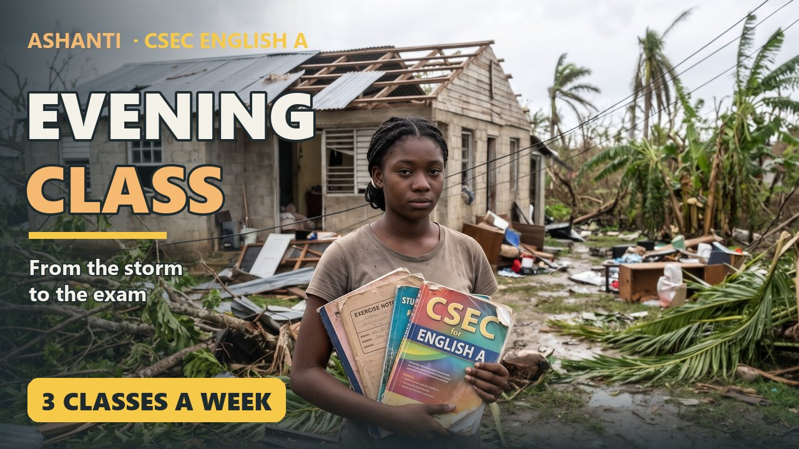

Home Progress Course lessons Files on GitHub
Ashanti Reid
Ashanti Reid, 16, lives in Black River, St Elizabeth, with her mother, her grandmother and her brother Jayden (11).

Goal: Grade I in CSEC English A, May-June 2027.
The road to the exam
3 of 69 sessions done. Next: Monday 30 November 2026, Full Stops That Save Marks.
Weeks 1-3: Foundations Mon 23 Nov 2026, week 1 Episode 1: Meet Ashanti Checkpoint: Diagnostic Back story, goals, the exam in one picture, diagnostic test. Sheet: 6/12. Ashanti: 13/20 on the items. Your paragraph is a writer's paragraph!
Wed 25 Nov 2026, week 1 Episode 2: The Diagnosis and the Plan Skill profile, five weaknesses with evidence, the 23-week plan. Sheet: 3/3. Three right surprises, and three items fixed!
Fri 27 Nov 2026, week 1 Episode 3: Creole, Standard English and Agreement Subject-verb agreement and tense in her own hurricane story; code-switching on purpose. Sheet: 14/15. 14 verbs, every arrow right. It sounds like a book!
Mon 30 Nov 2026, week 2 Full Stops That Save Marks Comma splices, run-ons, apostrophes Wed 2 Dec 2026, week 2 Paragraphs That Work Topic sentences and linking in her newsletter Fri 4 Dec 2026, week 2 Words With Weight Diction, register, denotation and connotation Show the other 67 sessions in the plan Mon 7 Dec 2026, week 3 Main Ideas First Main and subordinate ideas: the root of summary Wed 9 Dec 2026, week 3 Summary Clinic 1 Points list, own words, word count Fri 11 Dec 2026, week 3 Fact or Opinion? Facts, opinions and the diagnostic summary rewritten Weeks 4-8: Module 1: Informative Mon 14 Dec 2026, week 4 Reading Between the Lines Inference and drawing conclusions Wed 16 Dec 2026, week 4 Cause and Effect Sequence, cause and effect in reports Fri 18 Dec 2026, week 4 Summary Clinic 2 Timed 15-minute summary Mon 21 Dec 2026, week 5 Text Structures How informative texts are built Tue 22 Dec 2026, week 5 Charts With Arjun Joint session with Arjun Ramdeen (CSEC Maths, Trinidad): reading visuals, the weakest skill Wed 23 Dec 2026, week 5 Christmas Reading Skimming, scanning and a holiday reading list Mon 28 Dec 2026, week 6 Visuals Again Maps, signs, symbols; Paper 01 visual items Wed 30 Dec 2026, week 6 Letters and Emails Formal letter layout and tone Thu 31 Dec 2026, week 6 Year-End Review What changed in five weeks; summary clinic 3 Mon 4 Jan 2027, week 7 Reports and Articles Reports, notices, articles: River Mouth News Wed 6 Jan 2027, week 7 The Exposition Question Planning a 30-mark informative piece Fri 8 Jan 2027, week 7 Timed Exposition 35 minutes, marked against the criteria Mon 11 Jan 2027, week 8 Module 1 Checkpoint Checkpoint: Module 1 check Timed Module 1 test: 20 items and a summary Wed 13 Jan 2027, week 8 Checkpoint Results Updated skill profile; adjust the plan Fri 15 Jan 2027, week 8 Summary Clinic 4 Literary extracts: a new kind of summary Weeks 9-14: Module 2: Literary Mon 18 Jan 2027, week 9 What Makes Literature Genres, form and structure Wed 20 Jan 2027, week 9 Who Is Telling? Point of view and plot Fri 22 Jan 2027, week 9 People on the Page Character and characterisation Mon 25 Jan 2027, week 10 Setting and Mood Setting, mood and atmosphere Wed 27 Jan 2027, week 10 Tone and Code Tone, register and Creole in literature Fri 29 Jan 2027, week 10 Figurative Language Imagery: building on a strength Mon 1 Feb 2027, week 11 The Unseen Poem Sound devices and a timed poem Wed 3 Feb 2027, week 11 Reading Literary Prose Facts, inference and sequence in stories Fri 5 Feb 2027, week 11 Themes Themes and the writer's purpose Mon 8 Feb 2027, week 12 Contexts Social, historical and cultural contexts Wed 10 Feb 2027, week 12 Drama Drama on the page and on the stage Fri 12 Feb 2027, week 12 Literary Summary Summary clinic 5: literary extract Mon 15 Feb 2027, week 13 Responding to Literature Personal and creative responses Wed 17 Feb 2027, week 13 Story Planning Planning, character and plot in 10 minutes Fri 19 Feb 2027, week 13 Story Craft Openings, dialogue, description, endings Mon 22 Feb 2027, week 14 Timed Story Checkpoint: Module 2 check A full 30-mark story under time Wed 24 Feb 2027, week 14 Module 2 Checkpoint Timed Module 2 test Fri 26 Feb 2027, week 14 Checkpoint Results Updated skill profile; adjust the plan Weeks 15-18: Module 3: Persuasive Mon 1 Mar 2027, week 15 What Is Persuasion? Purpose, audience and context Wed 3 Mar 2027, week 15 Loaded Language Connotation and bias Fri 5 Mar 2027, week 15 Persuasive Techniques Spotting and naming techniques Mon 8 Mar 2027, week 16 Appeals and Evidence Logos, ethos, pathos and evidence Wed 10 Mar 2027, week 16 Visual Persuasion Adverts and cartoons: visual texts again Fri 12 Mar 2027, week 16 Evaluating Arguments Fact, opinion and inference in arguments Mon 15 Mar 2027, week 17 Building an Argument Claim, reasons, evidence, counter-argument Wed 17 Mar 2027, week 17 Persuasive Summary Summary clinic 6 Fri 19 Mar 2027, week 17 The Persuasive Essay Planning and writing the essay Mon 22 Mar 2027, week 18 Speeches and Letters Checkpoint: Module 3 check Speeches and letters to the editor Wed 24 Mar 2027, week 18 Comparing Texts Comparing persuasive texts Thu 25 Mar 2027, week 18 Module 3 Checkpoint Timed Module 3 test and an essay Weeks 19-23: Exam rehearsal Tue 30 Mar 2027, week 19 SBA Check Portfolio and oral presentation: final checks Wed 31 Mar 2027, week 19 Exam Strategy Timing plans for both papers Fri 2 Apr 2027, week 19 Timed Essay A persuasive essay in 35 minutes Mon 5 Apr 2027, week 20 Mock Paper 01 Checkpoint: Mock P1 The 2027 Mock Exam, Paper 01, timed Wed 7 Apr 2027, week 20 Mock Paper 01 Review Item analysis with the mock solution videos Fri 9 Apr 2027, week 20 Fix the Gaps 1 The items she missed, by skill Mon 12 Apr 2027, week 21 Mock Paper 02 Checkpoint: Mock P2 The 2027 Mock Exam, Paper 02, timed Wed 14 Apr 2027, week 21 Mock Paper 02 Review Marked against the mark scheme Fri 16 Apr 2027, week 21 Fix the Gaps 2 Summary and essay rewrites Mon 19 Apr 2027, week 22 Weakness Clinic: Summary Three timed summaries Wed 21 Apr 2027, week 22 Weakness Clinic: Argument Rebuttals and evidence Fri 23 Apr 2027, week 22 Weakness Clinic: Grammar Proofreading under time Mon 26 Apr 2027, week 23 The Last Rehearsal Checkpoint: Final Mixed timed practice Wed 28 Apr 2027, week 23 Final Profile The skill profile, Week 1 against Week 23 Fri 30 Apr 2027, week 23 Exam-Day Plan Sleep, timing, checklist; the send-off May-June 2027 CSEC English A exams Skill profile
From the latest checkpoint (week 1). The line marks the target, 70%.
Vocabulary in context 80%
Literal reading 70%
Inference 60%
Visual texts 40%
Literary devices 80%
Summary writing 30%
Grammar and agreement 45%
Punctuation 50%
Narrative writing 75%
Argument writing 45%
Weaknesses, and how to fix them
Grammar and agreement Evidence: 'Me and Jayden climbs', 'she don't say nothing', 'the river come': Creole grammar in exam writing.
Learn the 4 agreement rules; check every subject and verb pair Keep one tense in a paragraph; underline the verbs when you check Code-switch on purpose: Creole for dialogue, Standard English everywhere else Lessons: Lesson 2: Grammar for Clarity , Lesson 5: Diction, Register, Standard English and Creole
Punctuation Evidence: Comma splices ('The water rose, we ran'; 'the roof was gone, the zinc was ...'); missing apostrophes.
Find each sentence's main verbs; two main clauses need a full stop or a joining word Possessive check: 'whose is it?' means an apostrophe Lessons: Lesson 3: Punctuation for Meaning
Strengths Vivid narrative writing (Mama Lou's storytelling) Imagery and figurative language Vocabulary in context Ashanti's story Hurricane Melissa (28 October 2025) took most of the roof off the family house and flooded her mother's cook shop by the river. Her father, who farms in the parish's breadbasket, lost a whole season of crops.
Her school, Bridgeview High, ran rotational shifts from January 2026; she lost about three months of Fourth Form teaching and studied on her phone through power cuts. Fifth Form classes started in September 2026 with one block still under repair, so her English class meets in a tent.
She runs a WhatsApp newsletter, 'River Mouth News', about the rebuilding of her community. She wants to study journalism at CARIMAC (UWI, Mona), which needs a strong pass in English A.
Her grandmother, Mama Lou, tells Anansi stories, and Ashanti writes vivid narrative. She speaks Jamaican Creole at home and switches to Standard English at school, but under time pressure Creole grammar slips into her writing.
Sessions run online after school, three times a week, an hour each, on a borrowed laptop; the power and the data sometimes cut out.
The full 23-week plan: plan.md .
Miss Morrison's other students
Ashanti, her family and her school are fictional; Hurricane Melissa and its effect on schools in St Elizabeth are real. A study site for the YouTube series Ashanti CSEC English A - Evening Class , with Miss Morrison.